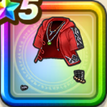

ピサロの水着上
攻略班 9.5点 / ドルマ属性耐性+5%ヒャド属性耐性+5%ドルマ属性耐性+5%デイン属性耐性+5%スキルの体技ダメージ+9%ドルマ属性斬撃・体技ダメージ+8%ザバ属性斬撃・体技ダメージ+8%
くわしい特徴
【レベル別習得スキル】 Lv1ドルマ属性耐性+5% Lv8ヒャド属性耐性+5% Lv10スキルの体技ダメージ+9% Lv12ドルマ属性斬撃・体技ダメージ+8% Lv15ザバ属性斬撃・体技ダメージ+8% Lv18【魔法戦士】すべての状態異常成功率+3% Lv20ドルマ属性耐性+5% Lv23さいだいMP+5 Lv25デイン属性耐性+5% 【限界突破スキル】 1凸攻撃力+12 2凸すばやさ+12 3凸守備力+12 4凸さいだいHP+12